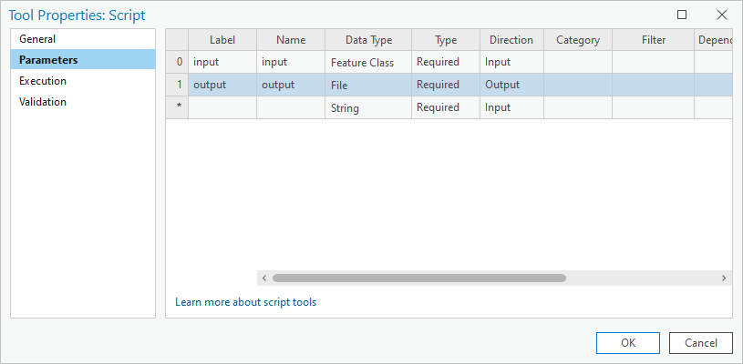

Skriptování v ArcGIS Pro
Cíl cvičení
Probloubení znalosti vytváření skriptů v jazyku Python pro platformu ArcGIS Pro.
Základní pojmy
- Registrace skriptu v ArcGIS Pro
{kind=link}
- IDE
{kind=link}
Ve vašem IDE zvolte cestu k Python interpretu odkazující na ArcGIS: C:\Program
Files\ArcGIS\Pro\bin\Python\envs\arcgispro-py3\python.exe
Použité datové podklady
Náplň cvičení
Práce s rastrovými daty pomocí NumPy
dmt = r"S:\K155\Public\data\ArcGIS\ArcCR500 3.3\ArcCR500_v33.gdb\DigitalniModelReliefu"
# otestovat nacteni dat
data = arcpy.Describe(dmt)
data.dataType
# nacteni metadat rastru
raster = arcpy.Raster(dmt)
raster.width, raster.height
# nacteni rastrovych hodnot do numpy pole
array = arcpy.RasterToNumPyArray(raster)
type(array)
# rozmer a datovy typ pole
array.shape, array.dtype
# zjisteni minimalni, maximalni hodnoty
array.min(), array.max()
# nastaveni no-data hodnoty
array = arcpy.RasterToNumPyArray(raster, nodata_to_value=-1)
array.min(), array.max()
# cetnost hodnot
unique, counts = numpy.unique(array, return_counts=True)
idx = numpy.where(unique == 200)
counts[idx]
# ukazka mapove algebry
array[(array>=0) & (array<=200)] = 0
array[(array>200)] = 1
numpy.unique(array, return_counts=True)
# zapis numpy pole do rastru
arcpy.env.outputCoordinateSystem = dmt
lowerLeft = arcpy.Point(data.extent.XMin, data.extent.YMin)
vystup = arcpy.NumPyArrayToRaster(array, lowerLeft,
x_cell_size=data.meanCellWidth, y_cell_size=data.meanCellHeight,
value_to_nodata=-1)
vystup.save(r"C:\users\martin\Documents\dmt200.tif")
Dokumentace:
Ukázka vytvoření skriptu
Navážeme na znalosti ArcPy:
import os
arcpy.env.workspace = os.environ["HOMEPATH"]
# vyber a export dalnic
silnice = r"S:\K155\Public\data\ArcGIS\ArcCR500 3.3\ArcCR500_v33.gdb\Silnice_2015"
dalnice = "dalnice.shp"
arcpy.analysis.Select(silnice, dalnice, "TRIDA = 1")
# buffer kolem dalnic
buffer_dal = "dalnice_buf.shp"
vzdalenost = "5000 meters"
arcpy.analysis.Buffer(dalnice, buffer_dal, vzdalenost, dissolve_option="ALL")
# odstraneni nepotrebnych vrstev
arcpy.management.Delete(dalnice)
Dokumentace:
Úkoly:
- Zprovozněte výpočet v Jupyter Notebooku
- Přepište do formy skriptu a registrujte jej v prostředí ArcGISu (New -> Script) včetně nastavení vstupních parametrů (vstupní třída prvků silnice, cesta k výslednému souboru ve formátu Esri Shapefile). 
- Nastavte IDE (PyCharm nebo VS Code) tak, aby šel skript spustit i z něj.
{kind=link}
Modul ArcGIS
Dokumentace:
- Inicializujeme mapového okno
- Vykreslíme výchozí podkladové mapy v novém mapovém okně
- Vyhledáme online vrstvy podle klíčového slova
from IPython.display import display
items = gis.content.search('Praha', item_type="Feature Layer", outside_org=True)
print(len(items))
for item in items[:3]:
display(item)
- Přídáme vybrané onlive vrstvy do mapového okna
- Na závěr vyzkoušíme integraci s knihovnou Pandas:
import pandas
okresy = pandas.DataFrame.spatial.from_featureclass(r"S:\K155\Public\data\ArcGIS\ArcCR500 3.3\AdministrativniCleneni_v13.gdb\OkresyPolygony")
okresy.spatial.plot(map_widget=map1)
map1
Další úlohy k procvičení
Další ukázky skriptů zde.